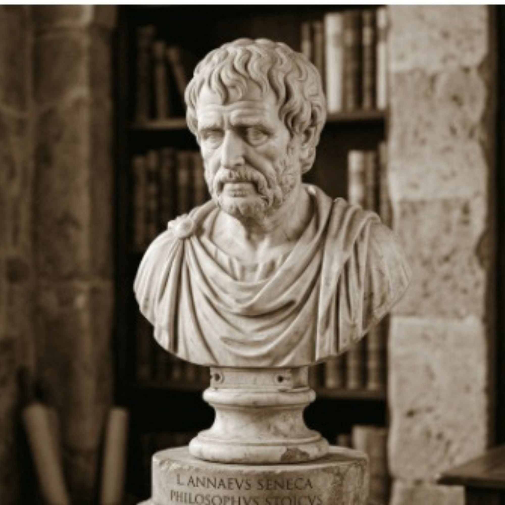

c. 4 a.C. – 65 d.C.
Lúcio Aneu Sêneca
O estadista
Nascido em Córdoba, na Hispânia, Sêneca foi levado ainda criança para Roma, onde recebeu formação retórica e filosófica de alto nível. Diferente de Zenão, Cleantes ou Epicteto, ele não viveu como professor de escola, mas como homem público: advogado, senador, tutor e depois conselheiro do jovem imperador Nero, chegando a administrar de fato boa parte do governo romano por vários anos.
Essa proximidade com o poder tornou sua vida uma espécie de teste constante para sua própria filosofia. Sêneca passou por exílio, por acusações políticas e, por fim, foi condenado por Nero a tirar a própria vida, ordem que cumpriu com uma serenidade que seus contemporâneos registraram como exemplar.
Por unir literatura, política e filosofia, Sêneca tornou-se um dos autores estoicos mais lidos ao longo da história, influenciando desde pensadores renascentistas até discussões contemporâneas sobre produtividade e gestão do tempo.
Sêneca escreveu sobre como permanecer equilibrado em meio à riqueza, à perda e ao perigo — temas que conheceu de perto ao longo da própria vida. Sua obra é vasta: as "Cartas a Lucílio", tratados como "Sobre a Brevidade da Vida" e "Sobre a Ira", além de peças de teatro.
Ali, Sêneca trata a filosofia como algo prático — um exercício diário de autoexame — mais do que um sistema teórico abstrato. Para ele, o tempo é o único bem realmente escasso que temos: riqueza e posses podem ser recuperadas, mas o tempo perdido, nunca.
Outro tema central é o autocontrole diante da raiva e do medo: para Sêneca, a maior parte do sofrimento humano vem da antecipação de males que talvez nunca aconteçam, e a filosofia serve justamente para treinar a mente a não se deixar levar por essas antecipações.
Sêneca insistia que não é porque as coisas são difíceis que não ousamos: é porque não ousamos que elas se tornam difíceis. — resumo do ensinamento atribuído a Sêneca